作为设计主控，通过深入的业务梳理、详尽的需求分析、全面的设计跟踪与严格的设计验证，保证设计质量对准业务目标；通过准确的工作评估、主动的项目跟进与及时的设计支持，保证项目又快又好地推进。
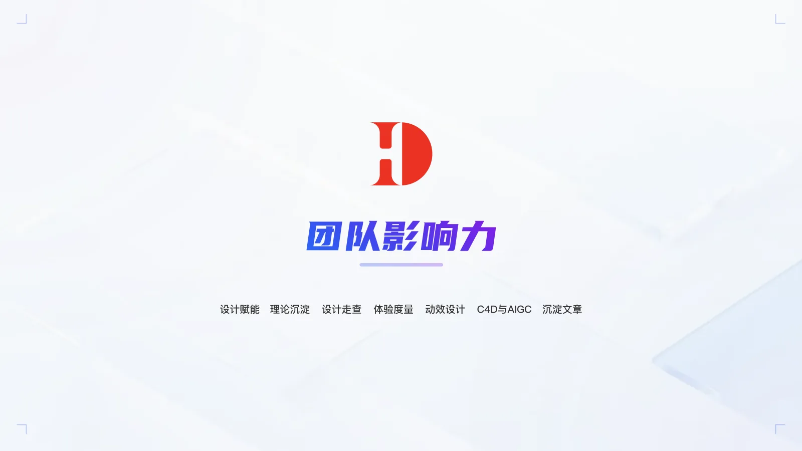
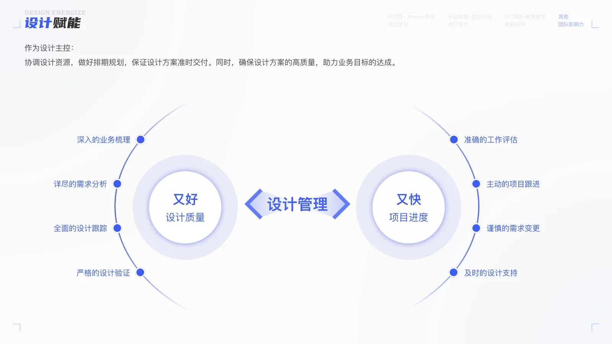
沉淀「业务流程中的正态分布模型」「B 端产品分析的用户关系双钻模型」以及 「AI Agent：以任务为中心的人智交互设计指南」（合作型 / 赋能型 / 自主型三类 Agent 的设计框架）。
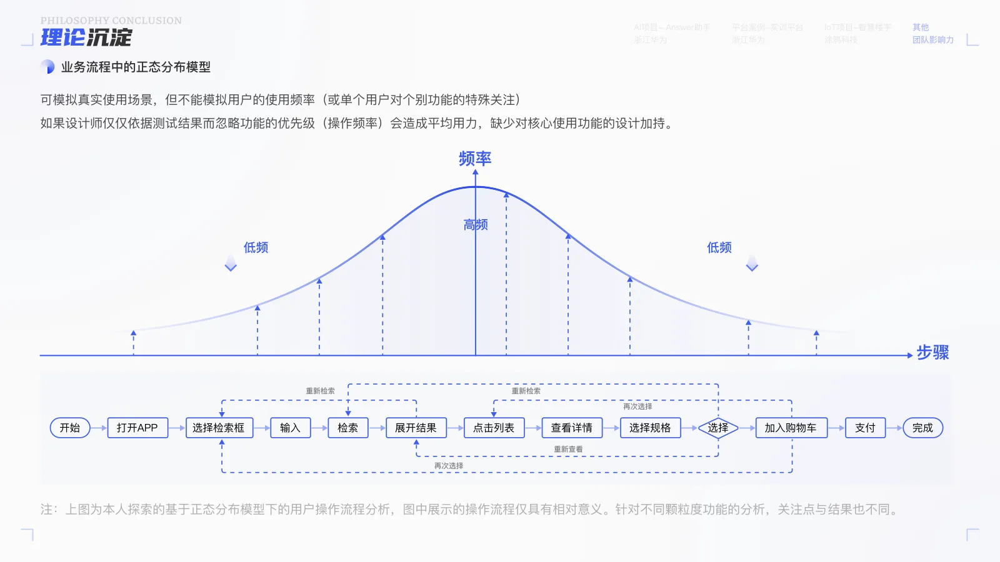
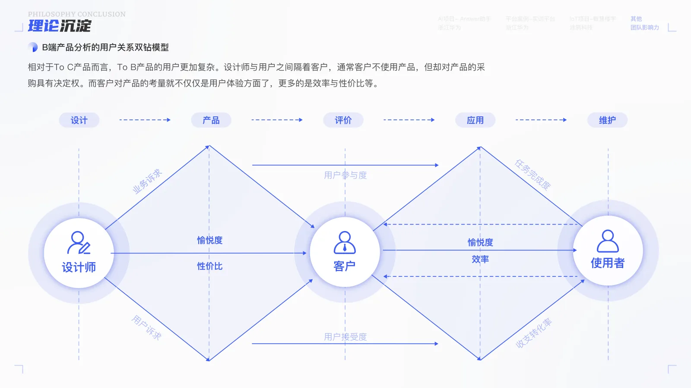
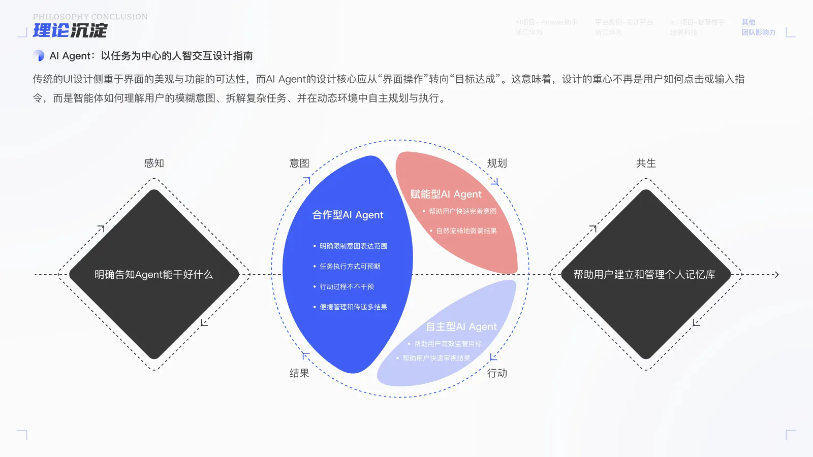
建立覆盖「操作流程、架构与导航、布局与设计、内容与可读性、行为与互动、特殊页面」六个维度的设计走查体系， 配合评价维度与紧迫度，输出结构化的问题描述与优化建议。
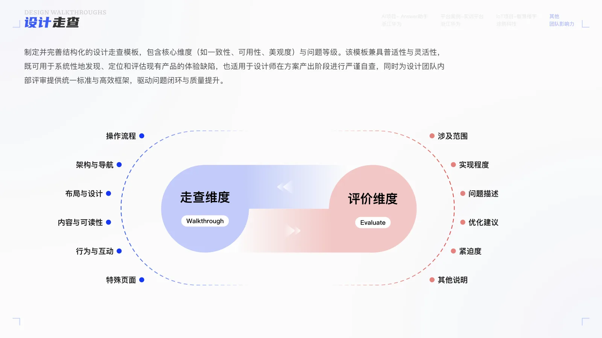
构建 TECS-R 体验度量模型（Task success / Easy use / Customization / Security / Recognition，即任务达成率 / 易用性 / 定制化 / 安全性 / 认可度）， 应用于产品设计阶段自查、上线前走查与使用阶段评估跟踪。
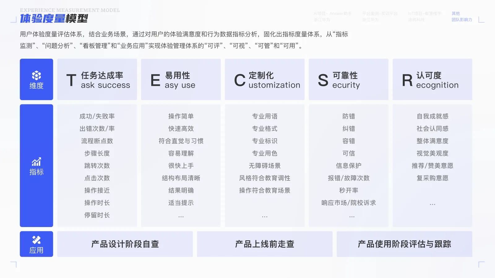
沉淀 To B 行业研究的三流模型（价值流 / 服务流 / 体验流），以及「探索与发现 → 系统设计 → 验证与迭代」的循环， 覆盖商业 / 职能 / 业务组织、关键岗位与「人 / 机 / 料 / 法 / 环」场景五要素。
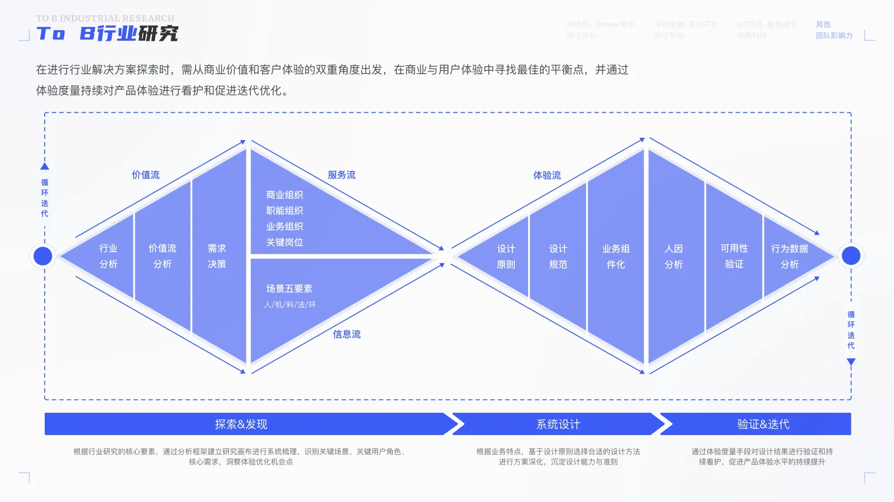
沉淀可交互动效（Axure / Principle）与展示动效（C4D / AE / Blender），累计动效组件 12 个、动效图标 72 个；并探索 C4D 与 AIGC 在设计生产中的结合。
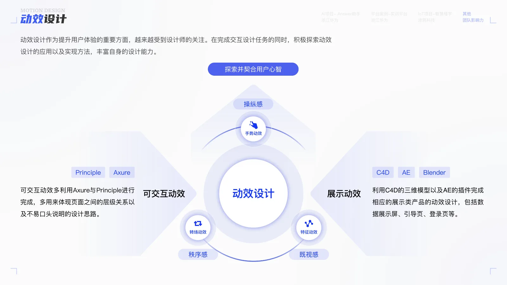
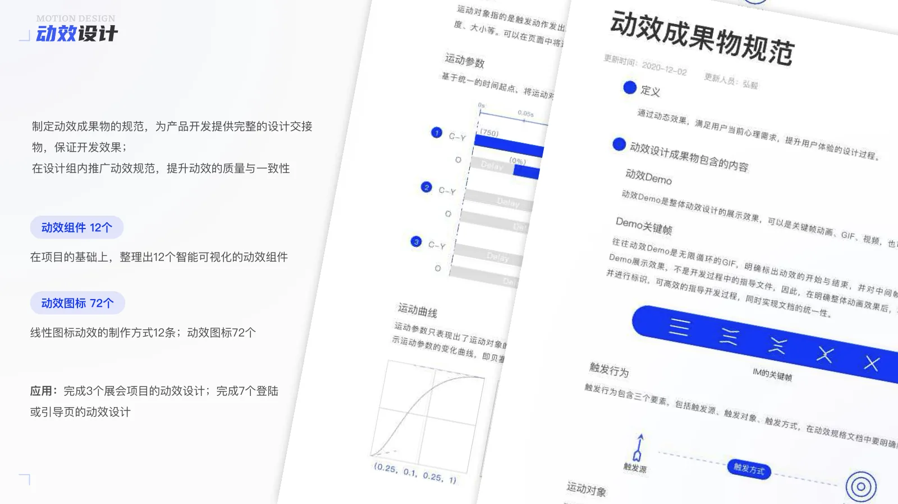
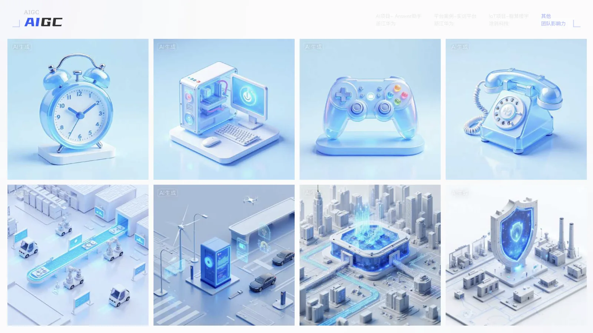
沉淀文章 45+ 篇，发布在微信公众号（uxd-si），被「微交互」「交互设计学堂」「UI 设计达人」等知名公众号转载， 并被「人人都是产品经理」「产品100」「优设网」推荐到首页；公众号订阅数 3000+。
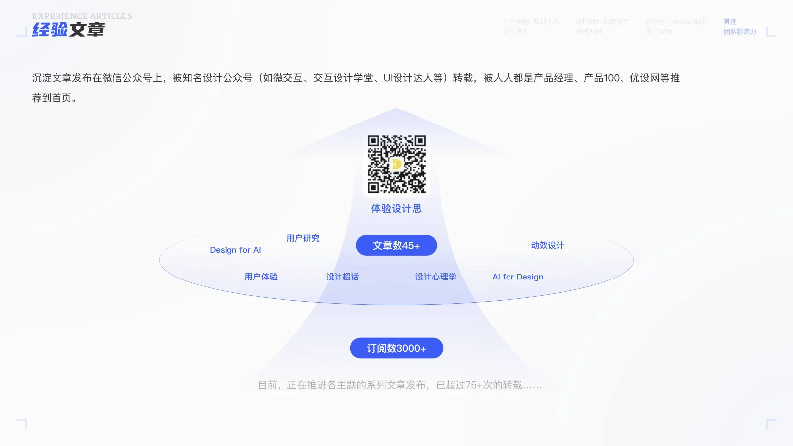